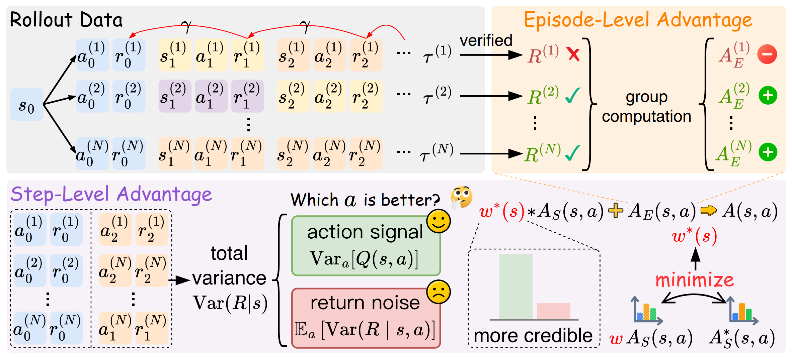

AdaStep
Adaptive Step Credit Weighting for Agentic Reinforcement Learning
AdaStep adaptively weights step-level credit in agentic reinforcement learning, preserving useful local advantage signals while suppressing downstream noise. It requires no critic, additional rollouts, or extra model inference, and improves performance across ALFWorld, WebShop, and ScienceWorld.